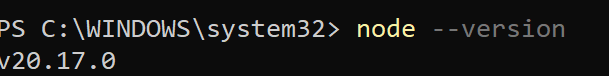
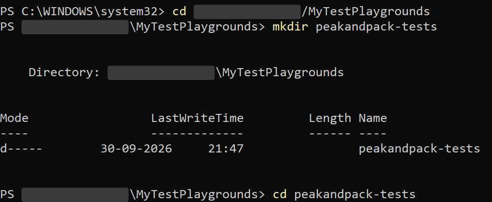
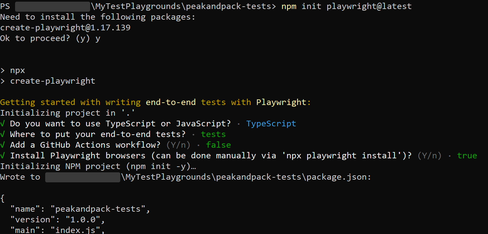
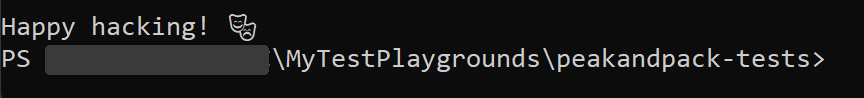
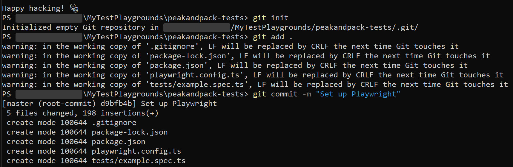
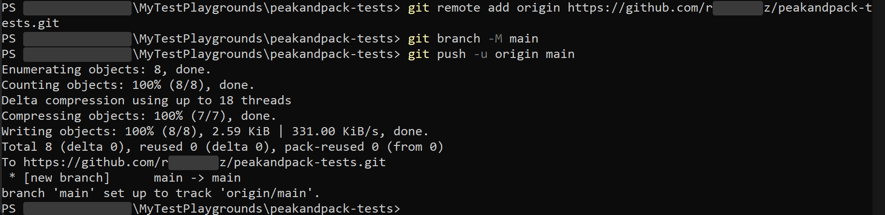
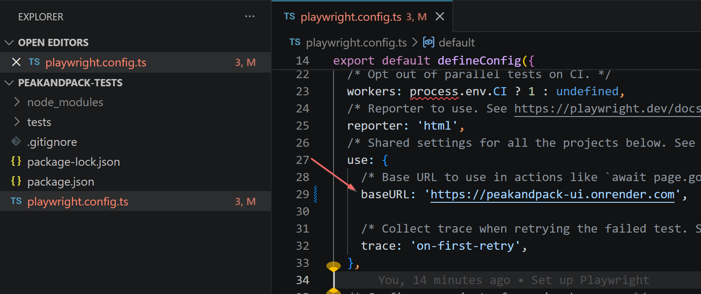
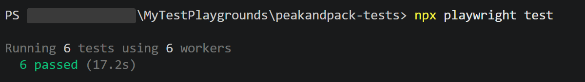
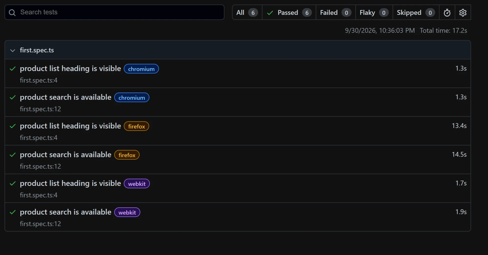

Intro to the Series & Your First Test
What this series covers, who it is for, and how to go from zero to a running Playwright test against a real app in one session.
What this series is
A complete Playwright series for anyone starting from zero. No prior automation experience needed. By Phase 15 you will have the skills to design, build, and lead a Playwright test suite at an architect level. Each phase teaches one concept, applies it to a real app (PeakAndPack), and leaves you with a working file. See the series overview for the full phase list and what PeakAndPack is.
Goal
By the end of this phase you will have:
- Installed Playwright
- Written two tests against PeakAndPack
- Run them and read the result
- Run just the tests you want, instead of all of them
- Understood every line of what you wrote
That loop (write a test, run it, read the result) is what every later phase builds on.
1. Before: what most people do first
How you set a project up decides how much of it you'll rewrite later. A test that only runs on your own laptop, against an address typed into the test itself, has to be reworked the day it needs to run anywhere else, such as in CI or against a staging copy of the app.
Here is the most common wrong start: copying a test from the internet and running it against a hardcoded URL:
// Copied from a tutorial. Problems: hardcoded URL,
// CSS selector that breaks on restyle, no config file.
const { chromium } = require('playwright');
(async () => {
const browser = await chromium.launch();
const page = await browser.newPage();
await page.goto('https://peakandpack-ui.onrender.com');
await page.click('.product-list-header');
console.log('clicked');
await browser.close();
})();
Explain this code, line by line
In plain words: this script opens a browser, goes to PeakAndPack, clicks the element styled with the class product-list-header, prints "clicked", and closes the browser. It's a script, not a test: nothing in it checks that anything is right.
- Lines starting with
//are comments: notes for people, which the computer ignores. const { chromium } = require('playwright');loads Playwright's controller for the Chromium browser.requireis an older way of loading code someone else wrote.constgives the result a name that can't be changed later.(async () => { ... })();wraps the steps in a block of code and runs it straight away. It's only there so the steps can useawait(explained in step 5). The test runner in the "after" version does this for you.chromium.launch()andbrowser.newPage()start a browser and open a tab, by hand. The test runner gives every test a ready tab instead.page.goto('https://...')opens the full address, typed into the script. If the address changes, every script needs editing.page.click('.product-list-header')finds an element by its CSS class, a name used for styling, and clicks it. Rename the class in a redesign and this breaks, even though nothing a user sees has changed.console.log('clicked')prints a message in the terminal. It only proves the script got that far, not that the page is right.browser.close()closes the browser. Forget it, and browsers pile up in the background.
// Proper Playwright test: uses the test runner,
// config-driven baseURL, role-based locator.
import { test, expect } from '@playwright/test';
test('product list loads', async ({ page }) => {
// '/' is joined to the baseURL set in playwright.config.ts (step 4)
await page.goto('/');
await expect(
page.getByRole('heading', { name: /peakandpack/i })
).toBeVisible();
});
Explain this code, line by line
In plain words: one real test: open the store's home page and check that its main heading is visible.
It uses Playwright's test runner, the part of Playwright that finds your tests, gives each one a fresh browser tab, runs them, and reports pass or fail. That's what the "before" script was missing.
Compared with the "before" script, notice three things:
- It checks something: the
expect(...)line. - It finds the heading by what it is, not by how it's styled:
getByRole('heading', ...). - It opens
'/'instead of the full address, because the address lives in one settings file.
You'll write this kind of test yourself in step 5, and every part of it is explained there, line by line.
The "before" version works once. The "after" version works in CI, survives a restyle, and gives you a proper pass/fail report. The rest of this phase explains exactly why, and builds it step by step.
2. Get Node.js and VS Code ready
You need two free tools:
- Node.js, which runs Playwright. Get it from nodejs.org, and choose the version marked LTS: long-term support. That's the version that has been properly tested and stays supported. The newer releases are for trying out features, not for depending on. On the download page, pick the installer that matches your computer: Windows or macOS, and the processor type,
x64for Intel and AMD chips,ARM64for Apple's M chips and newer ARM Windows laptops. If you're unsure, your computer's About or System settings page names its processor. - VS Code, the code editor this series uses. Get it from code.visualstudio.com.
Already have Node.js? Check its version. Open a terminal (Mac: search "Terminal"; Windows: search "PowerShell") and run:
# Prints your Node.js version. Playwright needs 18 or higher.
node --version
# Prints your npm version. npm comes with Node.js and installs Playwright in step 3.
npm --versionExplain this code, line by line
In plain words: asks your computer which version of Node.js is installed.
- Node.js is the program that runs JavaScript outside a web browser. Playwright is written in JavaScript, so it needs Node.js to run.
nodestarts Node.js.--versionis an option. Options start with two dashes and change what a command does. This one says "print your version, then stop".npm --versiondoes the same for npm, the tool that downloads packages, and that installs Playwright in step 3. It arrives with Node.js, so if the first command worked, this one should too. You'll see something like10.8.2; any recent number is fine.- In a terminal block, lines starting with
#are comments, like//in code. They're notes for you, not something to type. - What you'll see: something like
v20.17.0. The first number, the major version, is the one that matters. Playwright needs 18 or higher.

If you see something like v20.x.x (anything 18 or higher), you're set. If you get "command not found", install the LTS build from nodejs.org, then close and reopen the terminal.
3. Create your project and install Playwright
# Go to the folder where you keep your projects (Documents works fine).
# Don't create it wherever the terminal happened to open, which can be a system folder.
cd ~/Documents
# Make a folder for the project and move into it
mkdir peakandpack-tests
cd peakandpack-tests
# Set up Playwright: config file, example test, and the browsers it drives
npm init playwright@latestExplain this code, line by line
In plain words: go to your projects folder, make a folder for this project, step into it, and let Playwright's installer set everything up.
cd ~/Documents:cdmeans "change directory", which moves you into a folder.~is short for your home folder (on Windows,C:\Users\your-name), so this goes to your Documents folder.mkdir peakandpack-tests: "make directory" creates an empty folder with that name.cd peakandpack-testssteps into the new folder. Everything after this happens inside it. The terminal's prompt always shows which folder you're in.npm init playwright@latest:npmis Node's package manager, installed along with Node.js. A package is ready-made code someone else wrote and shared, and npm downloads and manages packages.initstarts a new project, andplaywright@latestsays to use Playwright's own setup tool, newest version.
What the installer creates:
package.json: the project's ID card. It holds the project's name and the list of packages it needs. Open it after the install and you'll find Playwright underdevDependencies: packages used while developing and testing. A project that ships an app also hasdependencies, the packages the app needs to run. A test project only needs the first list.package-lock.json: the exact version of every package installed, so the project installs identically on another computer.node_modules/: the downloaded packages themselves. It's large and can be rebuilt frompackage.jsonat any time, so it never goes into Git. Playwright lives in here, so every project has its own copy, and two projects can use different versions. If you ever clone a project from GitHub, this folder won't be there: runnpm installinside the project to rebuild it.playwright.config.ts: Playwright's settings (step 4).tests/example.spec.ts: a demo test, which you'll delete in step 5..gitignore: a list of files Git should leave out, such asnode_modulesand old reports.- The browsers: Chromium, Firefox and WebKit. They're downloaded once, to a shared folder on your computer, and every project uses them. That's why a second project installs much faster than the first.

peakandpack-tests.When it asks questions, choose:
- "Need to install the following packages... Ok to proceed?": y (it downloads the setup tool once)
- TypeScript: yes
- Tests folder: tests
- Add GitHub Actions: no (Phase 12 covers that)
- Everything else: accept the default

package.json and carries on installing.This installs Playwright and downloads the browsers it drives, so give it a minute the first time. It's finished when it says "Happy hacking!" and gives you the prompt back:

Now open the project in VS Code: choose File, then Open Folder, and pick peakandpack-tests. From here on, use VS Code's own terminal (Terminal, then New Terminal). It opens already inside the project folder, so a command can't run in the wrong place.
Before you write a single test, put this project under version control. Every later phase, especially Phase 12's CI setup, assumes your test code lives in a Git repo on GitHub. New to Git? The Git for QA primer covers init, committing, branching, and pushing to GitHub in one page.
# Start tracking this folder with Git
git init
# Stage every file the installer created
git add .
# Save them as the first snapshot of the project
git commit -m "Set up Playwright"Explain this code, line by line
In plain words: turn the folder into a Git repository and save its first snapshot.
- Git records versions of your files over time. Each saved version is a commit: a snapshot you can return to or compare against.
git initstarts tracking this folder. It adds a hidden.gitfolder where Git keeps the history. Nothing is saved yet.git add .chooses what goes into the next snapshot, a step called staging. The.means "everything in this folder", except what.gitignorelists.git commit -m "Set up Playwright"takes the snapshot.-mattaches a message, in quotes, saying what changed. Clear messages make the history easy to read later.- What you'll see: a line like
[master (root-commit) d9bfb4b] Set up Playwright.masteris the branch name,root-commitmeans it's the very first snapshot, andd9bfb4bis the snapshot's short ID.

Then create an empty repository on GitHub called peakandpack-tests: leave "Add a README", ".gitignore" and "license" unchecked, because your folder already has files. Connect your folder to it and push:
# Tell your local repo where its GitHub copy lives (use your own username)
git remote add origin https://github.com/YOUR-USERNAME/peakandpack-tests.git
# Rename the branch to main, the name GitHub uses by default
git branch -M main
# Upload the commit; -u means later pushes are just "git push"
git push -u origin mainExplain this code, line by line
In plain words: connect your folder to the empty repository on GitHub, and upload your snapshot to it.
- GitHub is a website that stores Git repositories online, so your work is backed up and shareable. Phase 12's pipeline will run your tests from there.
git remote add origin https://...: a remote is the online copy of your repository. This adds one and names itorigin, the usual name for "the main online copy".git branch -M main: a branch is a line of work in Git. Yours is calledmaster(you saw it in the commit output), and this renames it tomain, the name GitHub uses.-Mmeans "rename".git push -u origin mainuploads your commits onmaintoorigin.-uremembers that pairing, so from now ongit pushon its own is enough.- If a sign-in window opens, that's GitHub checking it's you. It usually only happens the first time.

4. Understand the config file
First, turn on Auto Save in VS Code: File → Auto Save. Without it, you can change a file, run your tests, and get the old result, because the change was never saved.
Open the project in VS Code (code . from the project folder), then open playwright.config.ts. The installer wrote it for you, with a comment above most lines. One line needs changing before your tests can run: inside use: {, the base URL starts switched off and pointing somewhere else:
// baseURL: 'http://localhost:3000',Delete the // at the start and put PeakAndPack's address in:
baseURL: 'https://peakandpack-ui.onrender.com',Explain this code, line by line
In plain words: the first line is the setting switched off; the second is the same setting switched on and pointing at PeakAndPack.
//at the start of a line makes it a comment, so the computer ignores it. Removing the//"uncomments" the line, and it counts again. Installers often ship optional settings this way: written in, but switched off.baseURL:is the setting's name. Settings are written asname: value.'https://peakandpack-ui.onrender.com'is the value. It's in quote marks because it's text, which programmers call a string.- The comma at the end separates this setting from the next one. Keep it: a missing comma between settings is a common cause of red error underlines.
- Why it matters: with a base URL set, a test can say
page.goto('/'), and Playwright fills in the rest of the address. Step 5's tests rely on it.

Red squiggles under process? VS Code may report "Cannot find name 'process'" on the process.env.CI lines. Newer versions of TypeScript, the checker VS Code uses, no longer load Node's type definitions on their own. Your tests still run, since Playwright doesn't type-check, but the false alarms can hide real mistakes. Fix it by adding a tsconfig.json next to the config file:
{
"compilerOptions": {
"target": "ES2022",
"module": "nodenext",
"moduleResolution": "nodenext",
"types": ["node"],
"strict": true,
"skipLibCheck": true,
"noEmit": true
}
}Explain this code, line by line
In plain words: settings for TypeScript, the checker that underlines mistakes in VS Code. Your tests run without this file; it only changes what VS Code reports.
- TypeScript is JavaScript with extra checks: it spots mistakes, like a misspelled name, before you run anything. That's what the
.tsending on your files means. - This file is JSON: settings written as
"name": valuepairs inside curly braces. Unlike the config file, every name needs double quotes, and there's no comma after the last setting. "compilerOptions"is the group that holds all of the checker's settings."target": "ES2022": which version of JavaScript to assume. ES2022 is a recent one that current Node.js fully supports."module"and"moduleResolution": "nodenext": how files load each other (theimportlines).nodenextmeans "follow Node.js's current rules"."types": ["node"]: load Node's type definitions, the descriptions of built-in things likeprocess. This is the line that removes the red squiggles. The square brackets hold a list, here with one item."strict": trueturns on the stricter checks, which catch more mistakes."skipLibCheck": true: check only your code, not the code inside downloaded packages. It's faster, and their code isn't yours to fix."noEmit": true: only check, never write out converted files. Playwright takes care of running your TypeScript itself.
"types": ["node"] is the line that fixes it. Then press Ctrl+Shift+P (Cmd+Shift+P on a Mac) and run TypeScript: Restart TS Server.
Stripped of its comments, the part of the file that matters for this series looks like this. Here's what each setting means:
import { defineConfig } from '@playwright/test';
export default defineConfig({
testDir: './tests', // where Playwright looks for spec files
fullyParallel: true, // run tests at the same time (faster)
retries: process.env.CI ? 2 : 0, // retry failed tests in CI only, never on your own machine
use: {
baseURL: 'https://peakandpack-ui.onrender.com', // prepended to every page.goto('/')
trace: 'on-first-retry', // record a trace when a test fails and is retried
},
});
Explain this code, line by line
In plain words: the settings Playwright reads before it runs anything: where your tests are, how to run them, and what every test shares.
import { defineConfig } from '@playwright/test';:importborrows a tool from a package, here'@playwright/test', the Playwright package the installer added.defineConfigwraps your settings so VS Code can suggest valid ones and flag mistakes as you type.export default defineConfig({ ... });:export defaulthands these settings to whatever loads the file, which is Playwright. Everything between{and}is one group of settings, each writtenname: value,.testDir: './tests': the folder to look in for tests../means "starting from this project's folder".fullyParallel: true: run tests at the same time instead of one after another.trueandfalseare yes/no values, written without quotes. Withfalse, different files still run side by side, but the tests inside one file run one after another, top to bottom.retries: process.env.CI ? 2 : 0: how many times to rerun a failed test. Read it as "on a CI server, 2, otherwise 0".process.envholds environment variables: settings the computer passes to a program when it starts it.- CI stands for continuous integration: servers, such as GitHub Actions, that run your tests automatically (Phase 12). They set a variable called
CI. Your laptop doesn't. ? :is a one-line if-then-else:question ? answer-if-yes : answer-if-no.- Why no retries on your own machine: a retry can make a real problem pass on the second try and hide it. Locally, you want to see every failure.
use: { ... }: settings every test shares. Here, the base URL and the trace setting.trace: 'on-first-retry': record a detailed replay of the test, but only when a failed test is retried. Traces are very useful but large, so this records them only when something has gone wrong (Phase 4).
Other lines you'll see in your generated file:
forbidOnly: !!process.env.CI: on CI, fail the run if someone lefttest.onlyin a file. (test.onlyruns just that one test and silently skips the rest.)!!turns "is the CI variable set?" into a plain true or false.workers: process.env.CI ? 1 : undefined: on CI, run one test at a time.undefinedmeans "not set", so on your machine Playwright decides, based on your processor.reporter: 'html': produce the HTML report you'll open in step 7.projects: [ ... ]: the list of browsers to run every test in, which is why each test runs three times (step 6).
The most important line is baseURL. Once it is set, every test can use page.goto('/') instead of the full URL. If PeakAndPack ever moves to a different host, you change one line in the config and every test updates automatically.
5. Write your first two tests
Delete tests/example.spec.ts. The installer added it as a demo, and it tests Playwright's own website, not PeakAndPack. Then create tests/first.spec.ts:
import { test, expect } from '@playwright/test';
// Test 1: the product list loads
test('product list heading is visible', async ({ page }) => {
await page.goto('/');
await expect(
page.getByRole('heading', { name: /peakandpack/i })
).toBeVisible();
});
// Test 2: the search box is available
test('product search is available', async ({ page }) => {
await page.goto('/');
await expect(
page.getByRole('textbox', { name: /search gear/i })
).toBeVisible();
});
Explain this code, line by line
In plain words: two tests. The first opens the store and checks that its main heading is visible. The second opens the store and checks that the search box is there. As a manual tester, you'd do the same: open the page, look for the title, look for the search box.
The file name. first.spec.ts: "spec" is short for specification. Playwright runs files whose names end in .spec.ts, and .ts means TypeScript.
Line 1: bring in Playwright's tools. import { test, expect } from '@playwright/test'; borrows two tools from the Playwright package: test creates a test, and expect checks that something is true.
Creating a test. test('product list heading is visible', async ({ page }) => {
test(...)creates one test. The text in quotes is its name, which appears in the results. Name it after what should be true: when it fails, the name alone tells you what broke.asyncmarks the test as containing steps that take time, like loading a page. It's required whenever the steps useawait.({ page }): Playwright hands the test a fresh, empty browser tab calledpage. Playwright calls anything it hands to a test, ready to use, a fixture, andpageis the one you'll use most. Every test gets its own, so tests can't interfere with each other.=> {starts the test's steps, which run until the matching});.
Step 1: open the site. await page.goto('/');
page.gotoloads an address in the tab. The dot means "use a tool that belongs topage". A tool like this is called a method, and the brackets after it hold the details you give it.'/'means the home page. Playwright joins it to the base URL from step 4, so this openshttps://peakandpack-ui.onrender.com/.awaitmeans "wait until this finishes before the next line". Without it, the test races ahead before the page has loaded.;ends the instruction, like a full stop ends a sentence.
Step 2: the check. Read it as one sentence: "wait while you check, and expect the heading named peakandpack on this page to be visible."
await expect(
page.getByRole('heading', { name: /peakandpack/i })
).toBeVisible();In testing terms, this is an assertion: a statement that must be true for the test to pass. A test without one only clicks around and never checks anything. Inside out:
page.getByRole(...)finds something on the page by its role: its job, such as button, link, heading or text box. Screen readers describe pages the same way ("heading, PeakAndPack Gear"). Finding elements by role has two benefits:- It survives redesigns: change the colour, font or position, and it's still a heading.
- It checks accessibility for free: if Playwright can't find something by its role, a screen reader user probably can't either.
'heading'is the role wanted: a title on the page, the<h1>to<h6>tags in its code. It's in quote marks because it's text.- The comma separates the two details given to
getByRole: what kind of thing, then which one. { name: /peakandpack/i }: the curly braces hold options, writtenlabel: value.nameasks for the heading whose name, its visible text, matches. A page often has several headings (each product card has one), so without a name Playwright wouldn't know which one you mean and would stop with an error./peakandpack/iis a pattern, not exact text. The slashes mark its start and end, the way quote marks do for text. It matches any name containing these letters, so "PeakAndPack Gear" matches. Theiafter the last slash means "ignore upper and lower case". A pattern keeps working if the title becomes, say, "PeakAndPack Outdoor Gear".- What
getByRolegives back is a locator: not the heading itself, but a description of how to find it. Playwright searches only when the locator is used, and searches again every time. That matters on pages where content appears a moment after loading, like PeakAndPack's "Loading gear..." screen. expect(...)prepares the locator for checking. On its own, it doesn't check anything yet..toBeVisible()is the check itself, called a matcher: the heading must exist, not be hidden, and take up space on screen, so a real user could see it. Other matchers check other things (Phase 3).await:toBeVisibledoesn't look just once. Playwright keeps checking for up to 5 seconds. If the heading appears, the check passes and the test moves on. If it never does, the test fails, and the report shows what it looked for.awaitholds the test on this line until that's decided. Leave it out, and the test can finish, even "pass", before the check has run.- The line breaks are only for readability. Written on one line, the code does exactly the same thing. Each opening bracket has a closing partner.
Test 2 has the same shape, with one difference: getByRole('textbox', { name: /search gear/i }). A textbox is anything you can type into. The search box has no visible label, so its grey hint text, "Search gear..." (called a placeholder), becomes its name.
Which lines have await, and which don't. page.goto(...) and expect(...).toBeVisible() start with await: they do something on the page, which takes time. page.getByRole(...) has none, because it does nothing yet. It only builds the description of what to look for, and the search happens when the check uses it. A handy rule: put await on the lines that act on the page or check it, not on the lines that only describe where to look.
What happens when the check runs: Playwright builds the description, searches the page, finds only "Loading gear..." at first, waits and searches again, then finds "PeakAndPack Gear" and confirms it's visible. Pass. In the report, that's the "Expect toBeVisible" step and its time.
6. Run the tests
# Runs every test in tests/ with no visible browser (headless)
npx playwright testExplain this code, line by line
In plain words: run all your tests and print the results.
- Headless means the browsers run without opening any windows. It's faster, and it's how tests run on servers, which have no screen.
- What you'll see:
Running 6 tests using 6 workers, then6 passedand the time. A worker is a separate process that runs tests; with several, tests run side by side. - If any test fails, Playwright opens the HTML report automatically and keeps the terminal busy showing it. Click in the terminal and press Ctrl+C to get your prompt back.
npx runs a tool installed in this project, here Playwright. playwright test finds every file in tests/ ending in .spec.ts and runs the tests inside it.
Playwright opens the browser invisibly (headless), loads PeakAndPack, runs both tests, and prints the result. Expect to see 6 passed, not 2. The generated config has a projects list that runs every test in three browsers: Chromium (Chrome's engine), Firefox and WebKit (Safari's engine). That's useful later. Phase 10 covers when to keep all three.
All six ran at the same time because Playwright runs tests in parallel. The number of workers (the separate processes that run tests) is normally half the number of cores in your computer's processor, so a bigger machine runs more at once. To run one test at a time, which is easier to watch, add --workers=1.

Every test failed on your first run? PeakAndPack runs on a free hosting plan that puts its server to sleep when nobody has visited for a while. Waking it takes 30 to 60 seconds, and until then the store shows only "Loading gear...", with no heading and no search box, so the tests fail after waiting their 5 seconds. Open the store in your browser, wait until the products appear, and run the tests again. Reading the failure in the report (next step) is how you'd find this out yourself.
To watch it happen in a visible browser:
# Same run, but opens a visible browser so you can watch each step
npx playwright test --headedExplain this code, line by line
--headedis an option, like--version, that shows the browser windows. You'll see windows open, the store load, and the windows close, quickly. It's useful for watching what a test really does, but slower than headless.- With three browsers in the config, windows from all three open. Add
--project=chromiumto watch just one.
To run just one file:
# Runs only this file, handy while you're still writing it
npx playwright test tests/first.spec.tsExplain this code, line by line
tests/first.spec.tsis the path to one file, starting from the project folder. Playwright runs only the tests in it.- Part of the name works too:
npx playwright test firstruns every test file whose path contains "first". - It's handy while you're writing a test: you see results for the file you're working on without waiting for the whole suite.
Choose which tests run
With six tests, running everything is fine. With sixty, you want to run just the one you are working on. First, give the tests a group: test.describe wraps related tests together, so the report shows them under one name. Change tests/first.spec.ts to this (the tests inside are the same two as before):
import { test, expect } from '@playwright/test';
// A group: everything inside belongs together in the report
test.describe('PeakAndPack home page', () => {
test('product list heading is visible', async ({ page }) => {
await page.goto('/');
await expect(page.getByRole('heading', { name: /peakandpack/i })).toBeVisible();
});
test('product search is available', async ({ page }) => {
await page.goto('/');
await expect(page.getByRole('textbox', { name: /search gear/i })).toBeVisible();
});
});Explain this code, line by line
In plain words: put the two tests in a named group. Nothing about what they check has changed.
test.describe('PeakAndPack home page', () => { ... });creates a group. The text in quotes is the group's name, and everything between the curly braces belongs to it.() =>is an empty function: a block of steps that takes no input. A group is only a container, so unlike a test it is not handed apage.- The two
test(...)blocks are unchanged. They are indented one level to show they sit inside the group. - The group's name is added in front of each test's name wherever tests are listed:
PeakAndPack home page › product search is available. That makes a failure easier to place.
Now you can pick which tests to run from the terminal:
# Only the Chromium runs, not Firefox and WebKit
npx playwright test --project=chromium
# Only tests whose full name contains "search"
npx playwright test -g "search"
# Show what would run, without running it
npx playwright test --listExplain this code, line by line
--project=chromiumkeeps only the runs for one project from the config'sprojectslist. With the generated config, that is the three browsers, so this runs 2 tests instead of 6.-g "search"(short for--grep) keeps only tests whose full name contains that text. The full name includes the file name and the group name, so-g "search"matches the search test in all three browsers (3 runs), while-g "home page"matches the group name and so keeps every test in it.--listprints the tests that would run and stops. It is a quick way to check that a filter selects what you meant before you wait for a run.- You can combine them:
npx playwright test --project=chromium -g "search"runs one test in one browser.
Two more choices live in the test file itself:
// Run only this test. Every other test in the whole run is ignored.
test.only('product search is available', async ({ page }) => { /* ... */ });
// Skip this test. It stays in the file and shows as "skipped" in the report.
test.skip('product search is available', async ({ page }) => { /* ... */ });Explain this code, line by line
test.only(...)marks one test as the only one to run. Playwright then ignores every other test, in every file, until you remove the.only.test.skip(...)turns a test off without deleting it. The run counts it as skipped, so a skipped test stays visible in the results and cannot be forgotten quietly./* ... */is another kind of comment, one that can sit inside a line. Here it stands for the test's steps, left out to keep the example short.
Never commit a test.only. It is handy while you work, but if it stays in a file, the whole suite silently runs one test and reports a pass. That is what the forbidOnly line in your config guards against: on CI, a leftover .only fails the run instead.
One more way to run tests is Playwright's UI mode, which gives you a window for running and inspecting tests:
# Opens Playwright's UI mode, a window for running and inspecting tests
npx playwright test --uiExplain this code, line by line
--uiopens a window that lists your tests. Click the ▶ next to a test, a file or a group to run it.- Select a run and it shows each step with a picture of the page before and after that step, plus the network calls and the browser's console messages. It's the Trace Viewer from Phase 4, on tap while you work.
- The pictures are snapshots, not the live page: you can look at them, but clicking on them does nothing.
Running tests from VS Code. Microsoft's Playwright Test for VS Code extension lets you run tests with a click. In VS Code, open Extensions (the four-squares icon on the left), search for it, and click Install. A green ▶ button then appears next to every test, and a Testing panel (the flask icon) lists them all. Keep using the terminal while you learn: it shows what's really happening, and it's exactly what a CI pipeline runs.
What the extension adds, and when to use it
You don't need it: npx playwright test already runs everything. It makes everyday work faster:
- A ▶ button next to every test, in the code file. Click it to run that one test, and see a tick or a cross right there.
- The Testing panel lists every file and test. Run all of them, one file, or one test, and see which passed.
- Show browser: watch the test run in a visible browser, the same as
--headed. The browser stays open after the test ends, so you can look around, and you close it yourself. - Project checkboxes: choose which projects, meaning which browsers, the buttons run. Tick only Chromium while you work and your clicks run one browser, not three.
- Refresh button: if a new test file does not appear in the list, click it.
- Show trace viewer: an option that opens a recording of the run, step by step, when the test ends.
- Pick locator: point at something on the real page, and it suggests a locator, such as
getByRole('button', { name: 'Add to cart' }). Useful in Phase 2. - Record new: click through the site, and it writes test code for you. It's good for seeing how actions become code, but always review what it writes (Phase 13).
- Debugging: pause a test on a line and step through it, watching the browser at each step (Phase 4).
Use it as a shortcut once you understand the command it replaces.
7. Read the HTML report
# Opens the HTML report from the last run in your browser
npx playwright show-reportExplain this code, line by line
show-reportopens the report from the last run. Each run replaces theplaywright-report/folder in your project with a fresh report.- It starts a small web server on your own computer, which is why the browser's address starts with
localhost, and why the terminal stays busy. Press Ctrl+C in the terminal when you're done.
This opens a browser tab with the full report. Learn to read it now; you will use it constantly. The key sections:
- Summary bar at the top: total passed, failed, skipped, and total run time at a glance.
- Test list: every test with its status, the file and line it starts on (
first.spec.ts:4), a coloured tag for the browser it ran in, and how long it took. Click a test's name to open it. Clicking the browser tag instead filters the list to that browser: the search box showsp:chromium, and clearing it shows everything again. - Test steps: inside a test, every line that did something is listed with its time. Before Hooks is Playwright preparing a fresh browser tab, and After Hooks is it cleaning up. The steps in between are your own lines, such as Navigate / for
page.goto('/'). - Failure detail: on a failing test, you see the exact assertion that failed, the expected value, the actual value, and the line number. This is where you start debugging, not the terminal.
- Trace viewer: if a test was retried (and you set
trace: 'on-first-retry'in the config), a trace link appears. Click it to open a full recording of every action the test took, with screenshots at each step and the network requests alongside them. This is Playwright's superpower for debugging failing tests.

8. After: what you have now versus the wrong start
The right setup gives you four things the wrong start does not:
- A config file, so the URL is set once.
- A test runner, so every test in the folder runs together.
- Role-based locators, so the tests survive a restyle.
- An HTML report with traces, so failures can be diagnosed without adding
console.logeverywhere.
The rest of the series builds on all four.
9. JavaScript vs Python: choosing your language
This series uses JavaScript/TypeScript. Playwright also has official Python bindings with identical capability. Here is when each is the right choice:
| JavaScript / TypeScript | Python | |
|---|---|---|
| Best for | Teams already in the JS ecosystem. Pure UI and API automation. This series. | Teams doing AI/ML work alongside QA. Combining Playwright with eval tools (DeepEval, RAGAs). The AI & LLM Testing series. |
| Playwright support | Primary language. All features, best documentation, most community examples. | Full feature parity. Official bindings maintained by Microsoft. |
| Ecosystem | npm, Node.js, TypeScript types, GitHub Actions. | pip, pytest, Pydantic, pandas: the AI tooling world. |
| Verdict | If automation is your main goal, use TypeScript. The tooling is richer and the examples are everywhere. | If you are combining automation with AI evaluation in one pipeline, use Python. One runtime, no bridge. |
The same two tests in Python, for reference:
from playwright.sync_api import Page, expect
# Test 1: the product list loads
def test_product_list_heading_is_visible(page: Page):
page.goto("/") # "/" is relative to the base URL, set with pytest --base-url
expect(page.get_by_role("heading", name="peakandpack")).to_be_visible()
# Test 2: the search box is available
def test_product_search_is_available(page: Page):
page.goto("/")
expect(page.get_by_role("textbox", name="search gear")).to_be_visible()
Explain this code, line by line
In plain words: the same two tests, written in Python. You don't need this for the series; it's here to show that the ideas carry across languages.
from playwright.sync_api import Page, expectis Python's version ofimport. Insync_api, Playwright's Python style, each step finishes before the next one starts by itself, so there's noawait.def test_product_list_heading_is_visible(page: Page)::defcreates a function. Python's test runner, pytest, runs every function whose name starts withtest_.page: Pagereceives the browser tab, like({ page }).- Python groups a test's lines by indenting them, where TypeScript uses
{ }. get_by_roleandto_be_visibleare the same tools, in Python's naming style: words joined by underscores.name="peakandpack"is plain text, not a pattern. A plain-text name already ignores case and matches part of the full name, so it still finds "PeakAndPack Gear". (The TypeScript version uses a pattern to show the technique; plain text would work there too.)- Python has no
playwright.config.ts. You give the base URL when running the tests:pytest --base-url https://peakandpack-ui.onrender.com.
Common mistakes in Phase 0.
- Forgetting
await. Every Playwright call is async. Skipawaitand the test races ahead before the browser responds. The error message is confusing; the fix is always adding the missingawait. - Using the wrong locator from the start. The generated example test uses
page.locator('.some-class'). Copying that pattern means every test is fragile from day one. Phase 2 covers this in depth. For now, usegetByRoleandgetByText. - Not setting
baseURL. Pasting the full URL intopage.goto()works but means you have to update every test if the URL ever changes. Set it once in the config. - Leaving
test.onlyin a file. One leftover.onlymakes the run ignore every other test, and the run still reports a pass. Search the project for.onlybefore you commit. - Running tests before the install finishes.
npm init playwright@latestdownloads browsers in the background. If you runnpx playwright testbefore it completes, you get a confusing error about missing browsers.
10. Deliverables
playwright.config.ts: configured with PeakAndPack baseURL, retries, and trace on first retrytests/first.spec.ts: two passing tests against PeakAndPack
Write a third test: the page title
Add a third test to tests/first.spec.ts that asserts the PeakAndPack page's <title>. Use the toHaveTitle() assertion. Run the full file and confirm all three tests pass.
Hint: try expect(page).toHaveTitle(/peakandpack/i) first, expecting the title to contain "peakandpack". Run it. If it fails, don't just fix the test, check what the actual title is and think about whether the app or the test is wrong.
Show solution: try it yourself first
Assignment solution
What you'll actually find. PeakAndPack's real <title> is React App, the unedited default from the framework's starter template. It was never customised. That's not a test bug to work around, it's a real finding: an unbranded browser tab is a small but genuine polish defect worth logging. Write the test to match reality (toHaveTitle(/react app/i)) and file the title as a bug separately. Confusing "the test doesn't pass" with "the test is wrong" is one of the most common beginner mistakes, and it only gets more expensive to unlearn later in the series.
test('page has a title', async ({ page }) => {
await page.goto('/');
// Page-level assertion: checks the browser tab's <title>, so no locator needed
await expect(page).toHaveTitle(/react app/i);
});
Explain this code, line by line
expect(page).toHaveTitle(...)checks the page's title: the text on the browser tab, not something inside the page. That's why it checkspagedirectly instead of a locator./react app/iis a pattern, as in step 5. PeakAndPack's tab still says "React App", the default from the tool it was built with. It's a real finding: a generic title doesn't tell users, or search engines, which site they're on.
Why this works. toHaveTitle() checks the document <title> element. The regex matches the actual title, the unedited default. A regex is still the right call over a hardcoded exact string: if the title ever gets a proper subtitle added later, a test written as /react app/i breaks the moment it's fixed, which is exactly the signal you want, prompting you to update the test to match the (now-correct) new title.
What to watch out for. toHaveTitle() does not need a locator: it acts on the page directly. A common mistake is writing expect(page.getByRole('heading')).toHaveTitle(), which fails because toHaveTitle is a page-level assertion, not a locator assertion.
Run the right tests
Use the three tests from part 1 and the commands from "Choose which tests run". Write down the number the terminal reports each time, and say why it is that number.
- Put all three tests in the
PeakAndPack home pagegroup, and run everything. How many tests run, and why? - Run only Chromium. How many now?
- Run only the test whose name contains "title", in all browsers, using
-g. How many? - Run
--listwith that same-gand check it lists what you expected, without running anything. - Put
test.skipon the title test and run only Chromium. What does the summary say? - Put
test.onlyon the search test instead (and remove the skip), run everything, and see what is left of the other tests. Then remove the.only. - Run everything with
--workers=1, then without. What changes?
Show solution: try it yourself first
The grouped file
import { test, expect } from '@playwright/test';
test.describe('PeakAndPack home page', () => {
test('product list heading is visible', async ({ page }) => {
await page.goto('/');
await expect(page.getByRole('heading', { name: /peakandpack/i })).toBeVisible();
});
test('product search is available', async ({ page }) => {
await page.goto('/');
await expect(page.getByRole('textbox', { name: /search gear/i })).toBeVisible();
});
test('page has a title', async ({ page }) => {
await page.goto('/');
await expect(page).toHaveTitle(/react app/i);
});
});The numbers.
- 9 tests. Three tests, each run in the three browsers from the config's
projectslist. - 3 tests.
--project=chromiumkeeps one browser. - 3 tests. The title test, once per browser:
npx playwright test -g "title". npx playwright test --list -g "title"prints the title test three times, once per browser, and then stops without running anything.- 1 skipped, 2 passed. The skipped test is still counted, which is the point of skipping instead of deleting.
- Only the search test runs, 3 times (one per browser). The other tests are not skipped, they are not even selected, which is why a leftover
.onlyis dangerous. - Without
--workers=1, tests run side by side and finish faster. With it, one at a time: the same results, a longer run.
Run the tests in headed mode and open the trace viewer. The goal is to get comfortable with the trace viewer before you need it for a real failure.
Retries only happen in CI by default (retries: process.env.CI ? 2 : 0), and no retry means no trace. So for this exercise:
- Temporarily change the config to
retries: 1. - Break one test on purpose: change the expected text so it can't match.
- Run with
--headedand let it retry, or trynpx playwright test --uiand open the failed run from there. - Open the trace, find the step where the assertion failed, and read the screenshot Playwright captured at that moment.
- Fix the test, set
retriesback toprocess.env.CI ? 2 : 0, and confirm it passes again.
Check what stuck: answer this phase's revision questions from memory, then open each recap to check.
Written by RN · The Quality Strategist · Playwright: Zero to Architect